Pictorial cancels in Nova Scotia
We have recorded 50 pictorial cancels in this province. 45 are still in use and can be requested from the post office, in person or by mail.
In use (45)
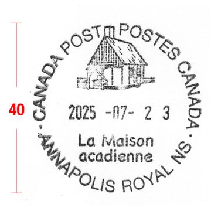
Annapolis Royal POLa Maison acadienneActive · ?–present Aylesford POCRANBERRY Capital of Nova ScotiaActive · ?–present
Aylesford POCRANBERRY Capital of Nova ScotiaActive · ?–present Barss Corner POBarss Corner post office, trees, cow, horseActive · 2024–2035
Barss Corner POBarss Corner post office, trees, cow, horseActive · 2024–2035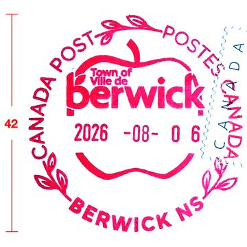
Berwick POAppleActive · ?–present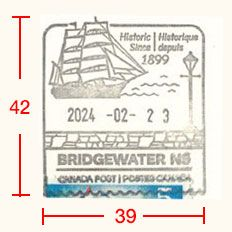
Bridgewater STN MainHistoric Since / Historique depuis / 1899Active · 2023–present Centreville POCharles Macdonald Concrete House MuseumActive · ?–present
Centreville POCharles Macdonald Concrete House MuseumActive · ?–present Chester PORacing Regatta Since 1858 / Course de voiliers depuis 1858Active · 2023–present
Chester PORacing Regatta Since 1858 / Course de voiliers depuis 1858Active · 2023–present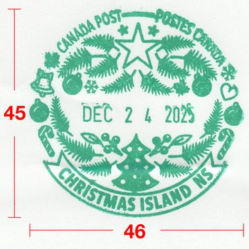
Christmas Island STN MainGreenActive · 2024–present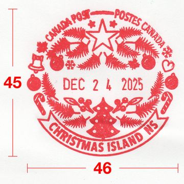
Christmas Island STN MainRedActive · 2024–present Digby Main POCatsActive · ?–present
Digby Main POCatsActive · ?–present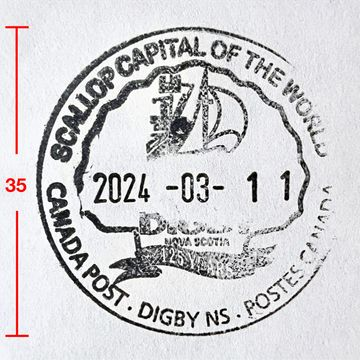
Digby Main POScallopActive · ?–present Digby Main POCommunityActive · ?–present
Digby Main POCommunityActive · ?–present Digby Main POBluenoseActive · ?–present
Digby Main POBluenoseActive · ?–present Guysborough POBroad Horns CountryActive · 2021–2032
Guysborough POBroad Horns CountryActive · 2021–2032 Halifax CSCExplosion 1917Active · 2016–2027
Halifax CSCExplosion 1917Active · 2016–2027 Halifax CSCCityscapeActive · 2023–2034
Halifax CSCCityscapeActive · 2023–2034 Halifax STN CentralHaunted CanadaActive · ?–present
Halifax STN CentralHaunted CanadaActive · ?–present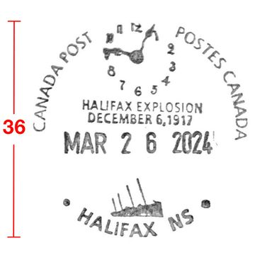
Halifax STN CentralExplosion 1917Active · ?–present Halifax STN CentralTown clockActive · ?–present
Halifax STN CentralTown clockActive · ?–present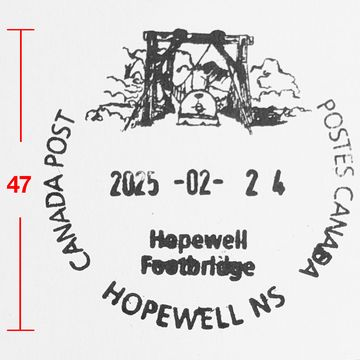
Hopewell POHopewell FootbridgeActive · ?–present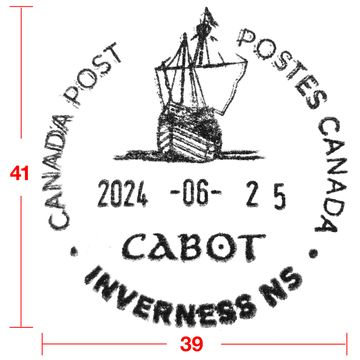
Inverness POCABOTActive · ?–present Louisbourg Main POFortress of / Fortresse de / LOUISBOURGActive · 2017–2028
Louisbourg Main POFortress of / Fortresse de / LOUISBOURGActive · 2017–2028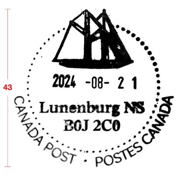
Lunenburg POBoatActive · 2023–present Maitland POHOME OF THE TIDAL BOREActive · 2021–present
Maitland POHOME OF THE TIDAL BOREActive · 2021–present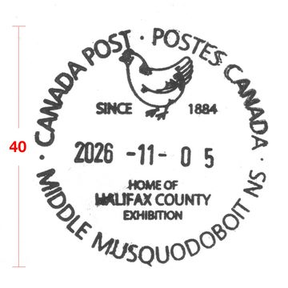
Middle Musquodoboit POSINCE 1884 / HOME OF HALIFAX COUNTY EXHIBITIONActive · 2020–2031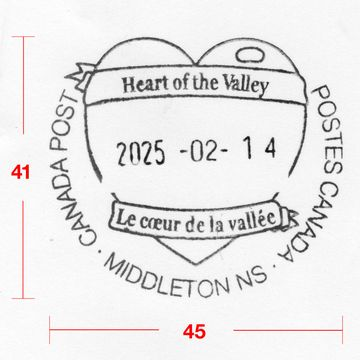
Middleton PO2021Active · 2021–2032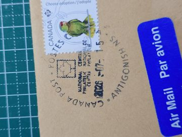
National Philatelic CentreNational Philatelic CentreActive · ?–present Noel POPinkActive · 2021–2032
Noel POPinkActive · 2021–2032 Noel POGreenActive · 2021–2032
Noel POGreenActive · 2021–2032 Oxford POBLUEBERRY CAPITAL OF CANADAActive · ?–present
Oxford POBLUEBERRY CAPITAL OF CANADAActive · ?–present Parrsboro PODinosaurActive · 2017–2028
Parrsboro PODinosaurActive · 2017–2028 Peggy's CoveBluenose 1921-2021Active · 2020–2031
Peggy's CoveBluenose 1921-2021Active · 2020–2031 Pictou POShip Hector / Launch 2000Active · ?–present
Pictou POShip Hector / Launch 2000Active · ?–present Port Hood POFIVE BEACHESActive · ?–present
Port Hood POFIVE BEACHESActive · ?–present Port Williams POShipActive · ?–present
Port Williams POShipActive · ?–present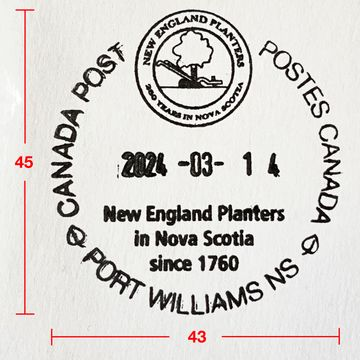
Port Williams POPlanterActive · ?–present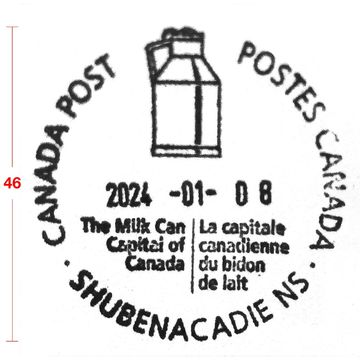
Shubenacadie POThe Milk Can Capital of Canada / La capitale canadienne du bidon de laitActive · 2023–present Southampton POWHERE THE RIVERS MEETActive · 2022–present
Southampton POWHERE THE RIVERS MEETActive · 2022–present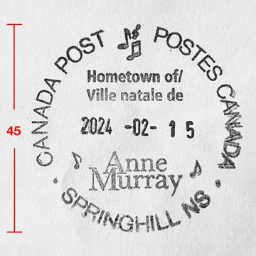
Springhill POHometown of / Ville natale de / Anne MurrayActive · ?–present Tatamagouche POHaunted CanadaActive · ?–present
Tatamagouche POHaunted CanadaActive · ?–present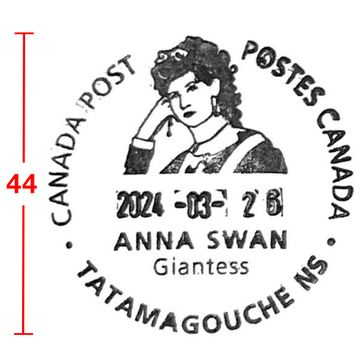
Tatamagouche POAnna SwanActive · ?–present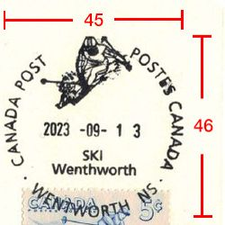
Wenthworth POSki WenthworthActive · 2022–present Whycocomagh POHead of the Waters / Tête des eauxActive · 2022–2033
Whycocomagh POHead of the Waters / Tête des eauxActive · 2022–2033 Windsor POWindsor-West Hants Pumpkin Regatta FestivalActive · ?–present
Windsor POWindsor-West Hants Pumpkin Regatta FestivalActive · ?–present Wolfville POSmallest Registered Harbour in the World / Le plus petit port enregistré du mondeActive · 2023–2034
Wolfville POSmallest Registered Harbour in the World / Le plus petit port enregistré du mondeActive · 2023–2034
Retired (5)
 Christmas Island STN MainGreen
Christmas Island STN MainGreen Middleton PO2011
Middleton PO2011 Middleton PO2012
Middleton PO2012Other provinces and territories: Alberta · British Columbia · Manitoba · New Brunswick · Newfoundland and Labrador · Ontario · Prince Edward Island · Quebec · Saskatchewan · Northwest Territories · Nunavut · Yukon